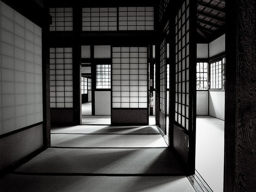

In Praise of Shadows (陰翳礼讃, In'ei Raisan) is an essay on Japanese aesthetics by the Japanese author and novelist Jun'ichirō Tanizaki. It was translated into English by the academic students of Japanese literature, Thomas Harper and Edward Seidensticker. A new translation by Gregory Starr was published in December 2017.
The essay consists of 16 sections that discuss traditional Japanese aesthetics in contrast with change. Comparisons of light with darkness are used to contrast Western and Asian cultures. The West, in its striving for progress, is presented as continuously searching for light and clarity, while the subtle and subdued forms of oriental art and literature are seen by Tanizaki to represent an appreciation of shadow and subtlety, closely relating to the traditional Japanese concept of sabi. In addition to contrasting light and dark, Tanizaki further considers the layered tones of various kinds of shadows and their power to reflect low sheen materials like gold embroidery, patina and cloudy crystals. In addition, he distinguishes between the values of gleam and shine.
The text presents personal reflections on topics as diverse as architecture and its fittings, crafts, finishes, jade, food, cosmetics and mono no aware (the art of impermanence). Tanizaki explores in close description the use of space in buildings, lacquerware by candlelight,[1] monastery toilets[3] and women in the dark of a brothel. The essay acts as "a classic description of the collision between the shadows of traditional Japanese interiors and the dazzling light of the modern age".
